Originally published in Mada Masr on 26 June 2015
By Ismail Fayed
Translated by Sarah Fayed
After reading exciting reviews on Facebook about the inspirational nature of this year's American University in Cairo's Graduate Visual Arts Student Exhibition, and having browsed through documentation of some of the works featured, I decided to drop in at the AUC in New Cairo.
The exhibition, which ran until May 28, featured the projects of 15 students from the Visual Cultures Program, was curated by Professor Shady El Noshokaty, and was hosted at the university's Sharjah Art Gallery.
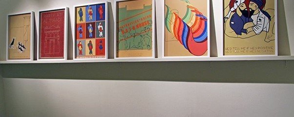
Overview of "Tracing Our Dragon's Smell" at AUC's Sharjah Art Gallery. Courtesy: Shady El Nashokaty
Although it was not my first visit to the AUC's new campus, on my way there, while attempting to figure out which gate to enter from, some concerns popped up in my head: What kind of audience goes there? How do they go? Are they allowed on campus? (Having worked there before, I just used my old ID to get in.) If the gallery is open to the public, how do visitors come and how does the AUC encourage them to come?
A large banner displayed the exhibition's title, Tracing Our Dragon's Smell.
"Tracing" is abundantly used in contemporary art. If you browse any contemporary art search engine (such as artsy.com) you find hundreds of exhibitions over the past decade in which "tracing" was used as a title or description of a work. I think this is related to attempts to demystify artistic process, deconstruct it, and make it amenable for analysis or categorization in the shape of stages or steps. This is directly connected to a widespread notion in contemporary art today: that art is tied to concepts more than to virtuosity or formal aspects.
The use of the term "tracing" made me wonder how artists at such young ages (the artists in question were mainly born in 1992 and 1993) and career stages can carry out in-depth analysis and self-reflect on their own psyches and work. Still, it's an important experience for any artist to go through, analyzing and "tracing" one's mental and psychological processes to see how they lead to the final product.
According to the exhibition guide, "tracing" refers to attempts to discern the ever-changeable, evolving ideas that occur and disappear in our consciousnesses and how our minds create networks of interconnected associations through this. Trying to sift through and make sense of these associations by simplifying and understanding them is a real challenge. But where did the dragon figure in all this? Is it a symbol or metaphor? Why the reference to its smell?
Outside the entrance area stood Malak Yacout's Temporal Semiotics, a row of distinctive, clean-lined, cement sculptures on a low wooden platform. To me, this was probably the most complex project in the show. The idea was to measure the sound-wave frequencies of Abdel Bassat Abdel Samad's reading of the Quran's Surat al-Nabaa and materialize them into a physical entity, but as a sculpture rather than a clock or calendar.
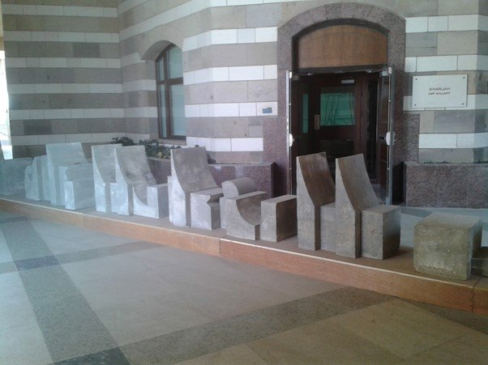
Part of Malak Yacout's Temporal Semiotics, materializing Quranic recitation frequencies into sculpture
In a small booklet attached to some nearby framed digital images of larger stone sculptures in a landscape and framed explanatory diagrams, Yacout wrote that the work attempted to follow time lapses that occur in the Quran, which is governed by recitation, proposing that the recitation durations could be a series of rhythms for Islamic arts such as design and architecture. She concluded by asking if we can reconstruct such works of art into sound again.
Barring Yacout's piece, in the exhibition there was a lack of description of the works' materials and measurements. There was also an absence of detail on their making processes, and for me this came in the way of understanding them.
On the ground floor, the main part of Monica Abou Shosha's work was a contraption that looked like a machine with a purpose (input, process, output), but it was not clear what it was meant to be processing. A second part consisted of animated cartoons separated by captions such as "We were fools" or "Everything begins from the same point." The artist's statement said that the work was an examination mind-body dualism in relation to how sensory signals can create and affect awareness.
Mohamed Nour's Catatonia consisted of two large screens and nine small screens arranged in a corner and rhythmically changing their colorful displays of digitally manipulated photos. According to the artist's text, it explored aspects of change over time. He believes that confusion caused by struggles to understand the point where everything begins and ends is a primary cause of catatonia, a state of abnormal physical activity usually caused by psychological problems or nervous ailments. I watched for three minutes but, as was the artist's aim, I felt disoriented and thought there was no need to enter catatonia myself.
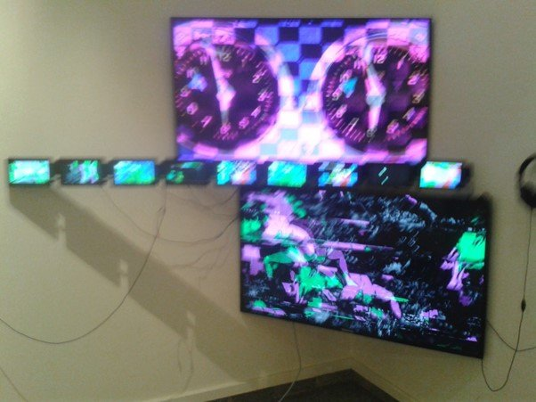
Mohamed Nour's Catatonia, multiple screens creating disorienting visual experience
Right next to Nour's project was Dina Said's Analogy of Inner States: three 120 x 140 cm, ink-drawn maps with layers on layers of symbols and both medical and literary terminology. The idea was to represent all the thoughts that occurred to the artist and that describe her insomnia. Some texts and symbols were not legible, but the level of detail, interconnectedness and interweaving of ideas was visually compelling.
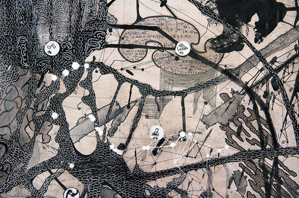
Dina Said's Analogy of Inner States, detailed ink maps representing insomnia and mental processes
Across from this was Yara Abdel Bassat's Gold, three relatively large, color photographs of three fair-skinned women with African maps drawn with henna on their backs. According to the catalogue, which is yet to be finalized and published, Abdel Bassat was addressing the tragedy of the Nubian diaspora, with emphasis on the neglect of culture and heritage. Nubians were displaced three times in less than a century and lost historically significant cities to the High Dam. Abdel Bassat says they presented the world with henna. I had unanswered questions though: Why women? And why not Nubian women? Was this intentional, a symbol of our persistence in obliterating Nubian existence? Why were the drawings on their backs — did that symbolize something?
The last two works on that floor were Lilly Nagaty's Imaginative Life and Myrna Abbas' Memory and the Act of Becoming.
Imaginative Life was the most ambiguous for me. The work's label extensively quoted 17th-century German philosopher Gottfried Wilhelm von Leibniz, and it consisted of a large color photograph of two children (perhaps the artist and a member of her family?), alongside a large golden ball gown, like those in animated movies, hanging I felt awkwardly and purposelessly next to it.
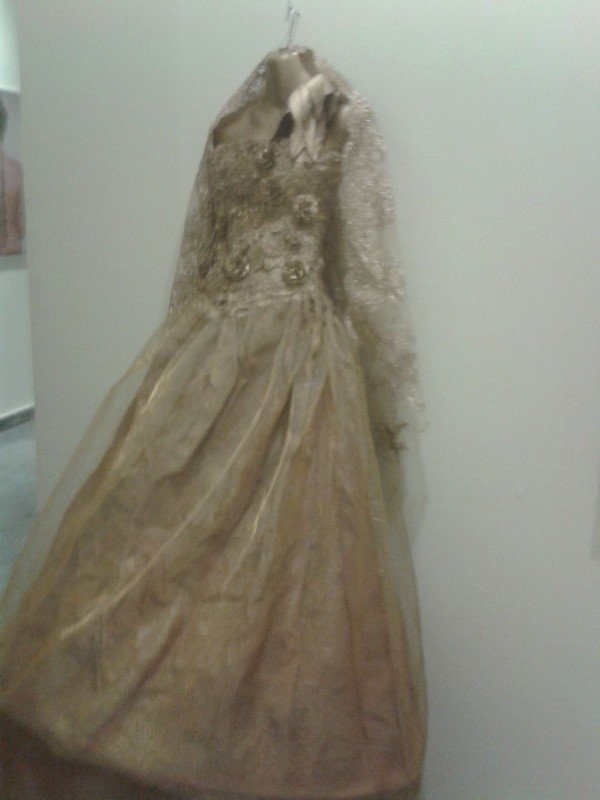
Lilly Nagaty's Imaginative Life, combining childhood photography with golden ball gown
Memory and the Act of Becoming was a crisply-shot six-minute HD video, set in a domestic interior with text in the top left corner. Abbas wrote that she is influenced by late Russian director Andrei Tarkovsky, specifically his 1975 movie The Mirror, which tries to visually represent memory and dreams and explore how they construct consciousness and perception. But to ambitiously declare inspiration from someone like Tarkovsky with his influence and preeminence can lead to unfair comparisons, for me rendering the young artist's work a bit naïve and superficial.
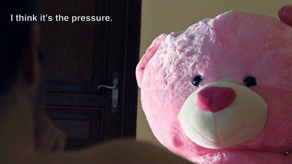
Still from Myrna Abbas' Memory and the Act of Becoming, inspired by Tarkovsky's The Mirror
The second floor began with an installation by Sarah Abouel Waffa, The Other's Pain Brought Me. It was a room-size, sponge-like pink cushion that you could "enter" if you took off your shoes. Above it, forming the shape of large teardrops, pink gauze sacks hung from the ceiling at various heights. The installation looked very similar to the work of Brazilian artist Ernesto Neto's work. Abouel Waffa wrote that it was a way to reach out or communicate beyond a person's negative energy or aura, inspired by the nerve cell which is responsible for sending messages from and to different organs.
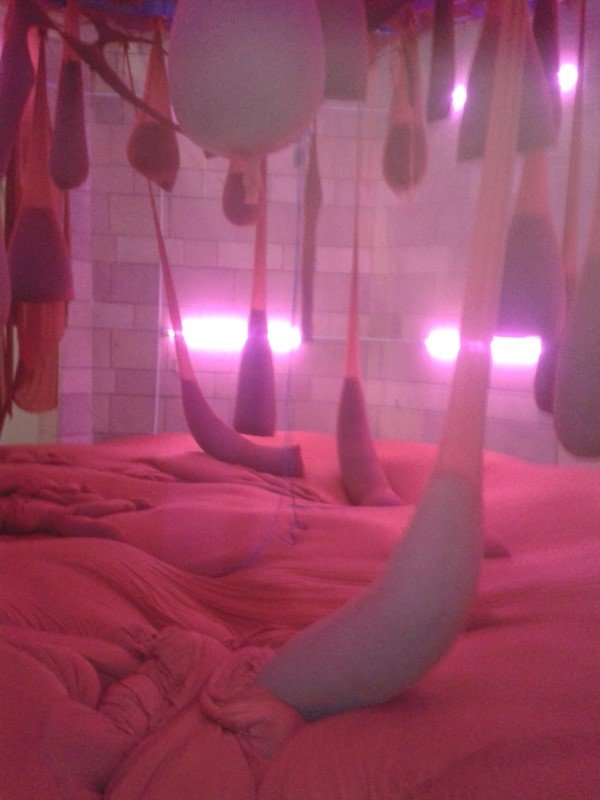
Sarah Abouel Waffa's The Other's Pain Brought Me, interactive pink installation with hanging gauze elements
Back to religion: Next was a video installation by Rawaa Sherif, The Ceremony. It was disturbing sound wise, with the constant banging echoing throughout the space, and featured three black-and-white video channels projected on white screens leaning against the wall, creating an interesting visual effect. Each contained an upside-down person carrying out an action.
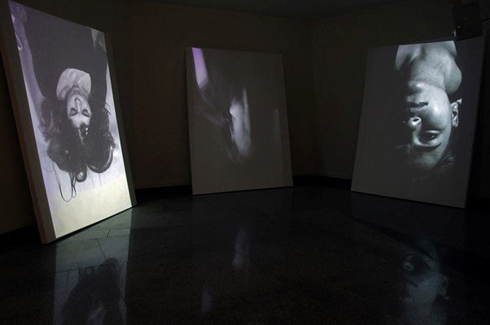
Rawaa Sherif's The Ceremony, three-channel video installation with upside-down figures
I felt that the contents, however, posed a problematic understanding of the idea of tradition. In her text in the catalogue, the artist raises ambitious questions about God's existence, his dominion over the world and faith, then mortality, afterlife and decomposing bodies. But suddenly, her questions take a turn toward rituals that transform the body, such as waxing. For the videos, Sherif developed her own traditions and rituals, which involved drowning, drinking too much water and beating the head — resulting in the destruction of brain cells. I could not watch them all because of the disturbing sound, but I came away thinking that death, purification methods and tradition as social constructs are more complex than they were represented in the artist's work, though it was executed with a sensitive visual composition.
Also dealing with religion was The Mysterious Spot by Cendrella Wael William, a series of paintings blending comics-style graphics with symbolism and Mayan iconography in storylines about the stages of the body's decomposition or interim state. It felt ironic to me.
Similarly, Passant Ibrahim's Conflict of Contradictions, six striking digitally printed posters in a colorfully graphic art deco style, dealt with the sexual dimension of Arabic miniatures. Homosexuality in Arabic miniatures is an old orientalist theme that still causes much debate.
The artist posited a number of puzzling and unusual claims in her catalogue text, a stereotypical and sensationalist analysis of miniatures. For example, that the absence of women and their bodies (an absence not borne out by historical evidence) must entail or be the result of a spread of homosexuality, and that Egyptian miniatures followed the same artistic styles and conventions of the Persian school.
Opposite Ibrahim's project was Maria Ashraf Hanna's Monster Under the Bed, two TV monitors playing cartoon movies under framed drawings explaining the project. It discussed the delusion Disney classics peddle by distorting stories to propagate and instill the idea of a happy ending.
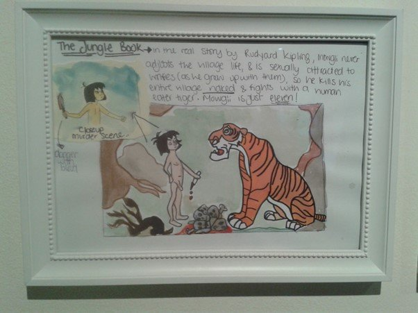
A detail from Maria Ashraf Hanna's Monster Under the Bed, critiquing Disney's narrative manipulation
In the catalogue, Hanna hypothesizes a duality between Disney and the Brothers Grimm, where Disney idealizes by rewriting the Grimms' dark, worst-case scenarios into perfect scenarios. She does not mention that the Brothers Grimm were collecting folktales to study historically and linguistically, thus likely had no intent to impose endings. Meanwhile, as Disney's films, styles and themes have been criticized and re-appropriated endlessly by artists (even on Facebook), I wondered whether it would have been more interesting to see the artist situate her critique of Disney's classics in relation to the works of artists such as Joyce Pensato, Enrique Chagoya or Gottfried Helnwein.
Yomna Nafea's A Self-Portrait and Zeynab Zidane's Juvenile were both connected to perception and its relation to objects' visual characteristics.
A Self-Portrait featured multiple media: animated movies, black-and-white photographs, a wax bust sculpture, a sprawling wooden construction and an LED screen. All these were used to monitor the artist's state of mind throughout the painting of a self-portrait. The piece thus explored memory and how over a time our perception of certain things, ourselves included, changes.
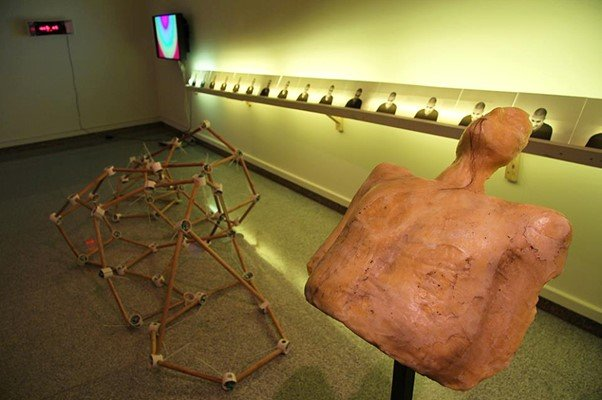
Yomna Nafea's A Self-Portrait, multimedia exploration of changing self-perception
Juvenile consisted of three black-and-white drawings, a glass cabinet of detailed seahorse-shaped metal cherubs, and another multi-shelved cabinet containing cherubs made of pink wax or plastic. These created patterns of shapes decipherable from afar but with ungraspable, mysterious details. According to her text, Zeidan focused on the idea of camouflage as concealment in relation to power and fear. The choice of the cherub was mysterious to me, but I enjoyed the formal aspects of the work.
A project that stood out thematically was Tasneem Breaka's Cancerous Dilemma. It consisted of items such as a bag, a wooden portrait, a mug and a shoe, each with a lumpy pattern or thread-like extension added to them. The execution was visually minimal, so a lot of effort to concentrate on them was required — really bringing to mind the feeling of something pernicious and insidious, like cancer, which while not clear or visible to us exists in various unusual forms.
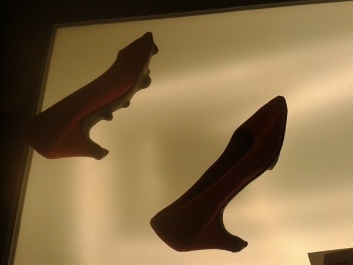
Part of Tasneem Breaka's Cancerous Dilemma, everyday objects modified to evoke insidious growth
The catalogue revealed that the work wondered about how cancer, as something that creates and replicates abnormal cells in our bodies, can also reflect on and affect other aspects in our lives. Breaka suggests that our materialistic desires or acquisitions can reflect disturbance in us or in the objects themselves.
Thus the exhibition did not have a specific theme. It was a platform through which graduate students could present their projects, each representing the ideas and interests of its creator. Various themes recurred throughout, however, including religion, identity in relation to personality, and the idea of perception in connection to the life one leads.
What I found most exciting about the exhibition was the diversity of artistic practices and their elaborate processes and production methods. In an art context characterized by material and artistic scarcity, despite criticisms, the works of 15 young artists is a very welcome addition.
"Tracing Our Dragon's Smell" showed at AUC's Sharjah Art Gallery until May 28, 2015.